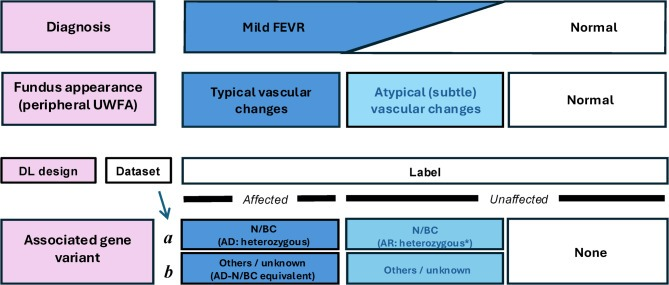
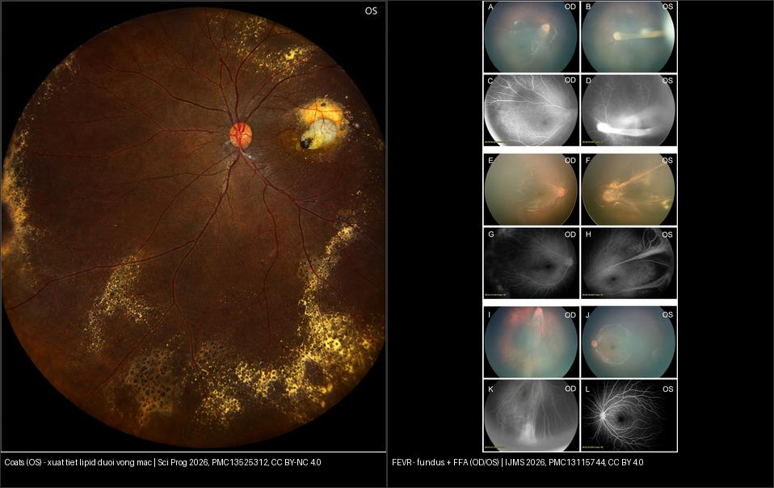
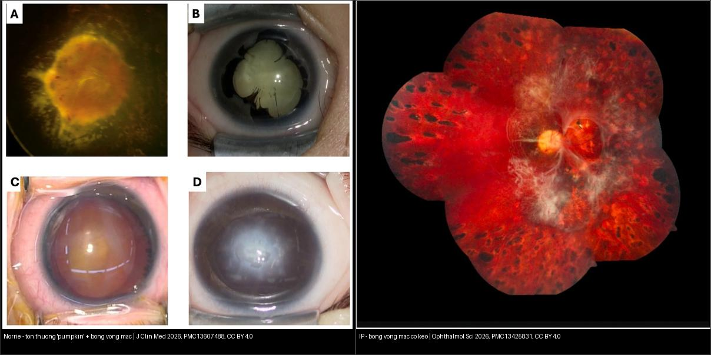
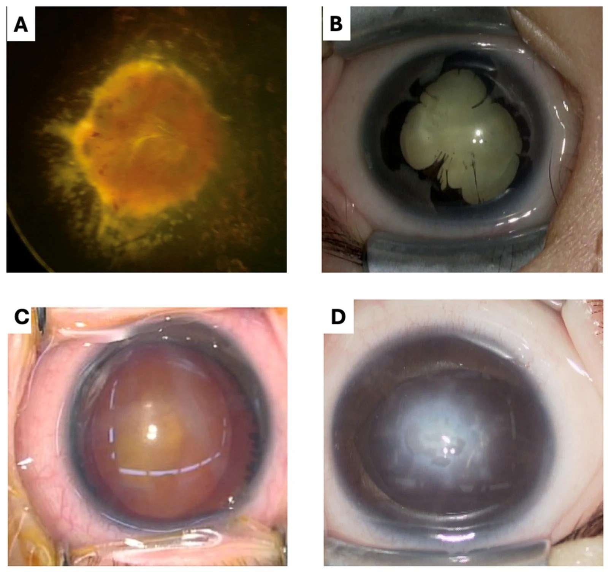
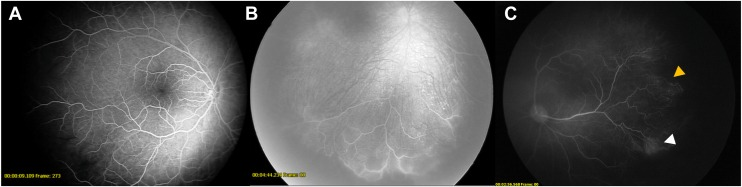
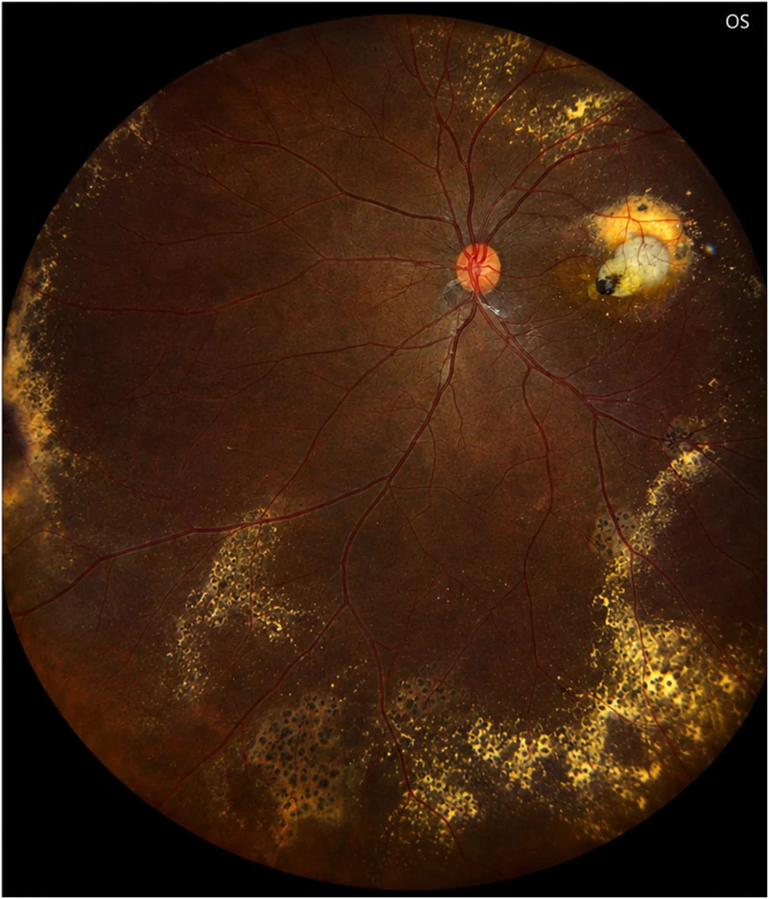
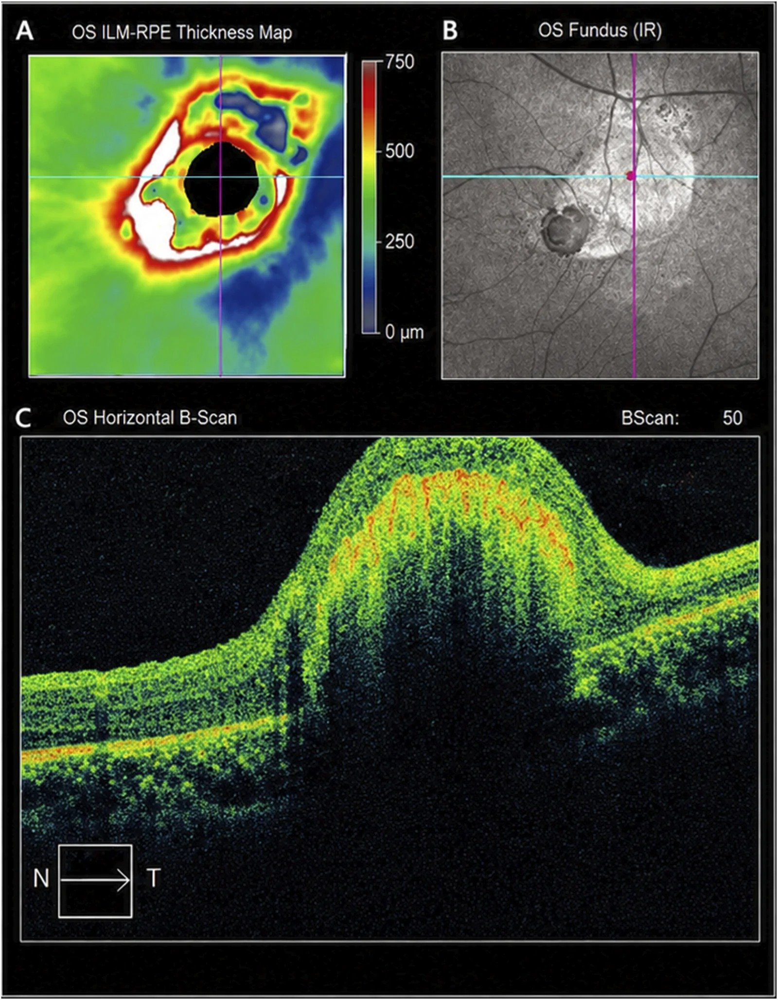
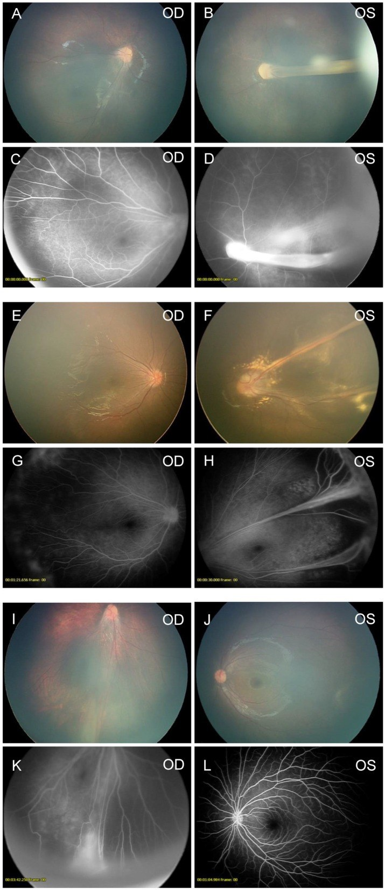
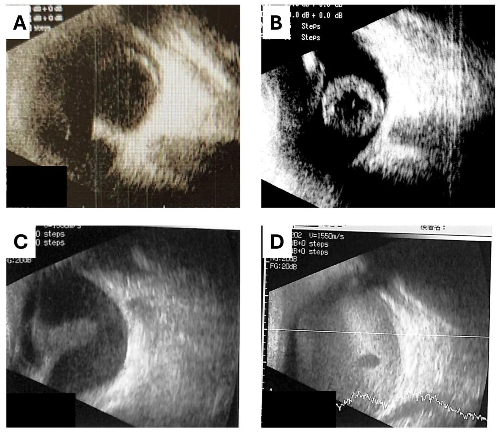

457 — Bệnh "giả ROP" ở trẻ đủ tháng: FEVR, Norrie, incontinentia pigmenti & Coats / Pseudoretinopathy of prematurity in term infants
Tags: pattern:gia-rop pattern:tan-mach-vong-mac pattern:bong-vong-mac vung:vong-mac vung:tre-du-thang score:Shields protocol:WFFA protocol:sieu-am-B-scan
Mức chắc chắn (certainty): tổng hợp y văn (literature synthesis) — tổng hợp từ y văn mở 2022–2026 (IJMS 2026 CC BY; Sci Rep 2026 CC BY-NC-ND; J Clin Med 2026 CC BY; Ophthalmol Sci 2026 CC BY; Sci Prog 2026 CC BY-NC); có gắn hình thái ca nguyên văn từ các bài gốc nhưng nội dung nhóm tự biên.
1. Tổng quan — cùng "con đường cuối" như ROP nhưng KHÔNG do sinh non
- Định nghĩa (pathology): "bệnh giả ROP" (pseudoretinopathy of prematurity) là nhóm bệnh gây thiếu máu võng mạc ngoại vi → tân mạch → bong võng mạc ở trẻ đủ tháng / không có tiền sử sinh non. Chân dung nhìn giống ROP (gờ, tân mạch, bong co kéo,
leukocoria) nhưng cơ chế và gen hoàn toàn khác (bài 456). Đây là cạm bẫy chết người: gọi "ROP" ở trẻ đủ tháng = bỏ sót bệnh di truyền + bỏ sót tầm soát gia đình + bỏ sót retinoblastoma (khối u đe dọa tính mạng). - Hai con đường sinh bệnh — TẠI SAO ra hình ảnh:
- Bất thường phát triển mạch máu (developmental vascular failure): tín hiệu Norrin–β-catenin/Wnt (gen NDP → norrin; FZD4, LRP5, TSPAN12, CTNNB1) và các gen liên quan (KIF11, DOCK6) bị đột biến → mạch máu không mọc hết ra ngoại vi → võng mạc vô mạch ngoại vi → thiếu oxy → VEGF → tân mạch tại ranh giới → co kéo. Đây là cơ chế của FEVR, Norrie, incontinentia pigmenti (IP).
- Giãn mạch–teo mao mạch (telangiectasia): mạch võng mạc giãn, phình túi ("light bulb") gây rò huyết tương → xuất tiết lipid thấm vào võng mạc và dưới võng mạc → bong võng mạc xuất tiết. Đây là Coats (và Leber miliary aneurysms cùng phổ).
- TẠI SAO thấy được trên ảnh: trên chụp mạch huỳnh quang (FA) — vùng võng mạc vô mạch không ngấm thuốc (vì không có mạch để dẫn thuốc, hàng rào máu–võng mạc còn nguyên) nên tối; còn tân mạch rò thuốc nên sáng muộn. Trên siêu âm B-scan — bong võng mạc là dải tăng echo hình phễu (mở/đóng) vì võng mạc + máu/xơ tăng hồi âm mạnh; canxi hóa (retinoblastoma) cho tăng echo kèm bóng sau. Trên MRI — Coats có dịch dưới võng mạc T1/T2 tăng do bản chất lipid–protein đậm đặc, không ngấm mạnh, khác khối u đặc của retinoblastoma.
- Ngưỡng định lượng & dịch tễ (theo y văn làm nguồn):
- Norrie (Futami J Clin Med 2026): 28 mắt/14 BN, tuổi trung vị lúc khám đầu 2,5 tháng; 82% mắt đã bong võng mạc stage 5 khi chẩn đoán, chỉ 18% còn stage 2/4 → cửa sổ can thiệp cực hẹp. Gần như toàn bộ mắt stage 5 mất hoàn toàn tri giác ánh sáng (chỉ 2 mắt stage 4 đã laser giữ được chút).
- Incontinentia pigmenti (Moon Ophthalmol Sci 2026): prevalence ~1,2/100 000; 70–80% do mất đoạn 11,7 kb gen IKBKG (NEMO), ~20% không tìm thấy đột biến; > 70% trẻ có dấu tổn thương võng mạc trên WFFA dù soi đáy mắt thường có thể bình thường.
- Coats (Almutairi Sci Prog 2026): tỷ lệ mới mắc ~0,09/100 000; nam >> nữ, thường một bên (không được lấy "một bên" làm cớ loại trừ tuyệt đối — có ca hai bên/Leber miliary aneurysms).
- FEVR (Naruse Int J Mol Sci 2026, 281 bệnh nhân): 85% không kèm hệ thống (non-syndromic), 15% có biểu hiện hệ thống (syndromic); biến thể gen Norrin/β-catenin ở 54% non-syndromic vs 29% syndromic; 71% ca syndromic tìm được đột biến. Syndrome hay gặp gen KIF11, NDP, CTNNB1, DOCK6, TSPAN12, LRP5; syndromic đối xứng hơn (67% vs 39%, p = 0,0012) và chẩn đoán ở nhũ nhi nhiều hơn (95% vs 57%).
- Đối chiếu ROP: ROP chỉ xuất hiện ở trẻ non tháng rất non (bài 456) — nếu trẻ không non thì KHÔNG được mặc định là ROP.
2. Mẫu hình + chẩn đoán phân biệt theo tuổi/cơ chế (Gamut)
- Mẫu hình cửa vào: trẻ nhũ nhi đủ tháng có mất ánh đồng tử đỏ / leukocoria / xanthocoria, lác mới xuất hiện, rung giật nhãn cầu, đục giác mạc / bóng trắng sau đồng tử, hoặc tiền sử gia đình FEVR/Norrie/IP.
- Gamut theo cơ chế (xếp thứ tự phải loại trừ):
- Khối u (BẮT BUỘC loại trừ trước tiên): retinoblastoma (canxi hóa thô, < 5 tuổi, gen RB1) — bài 412; hiếm hơn: hemangioblastoma (VHL), u nguyên bào tủy.
- Bất thường phát triển mạch: FEVR (thể nhẹ có thể không triệu chứng, khám sàng lọc gia đình), Norrie (X-linked, chậm phát triển trí tuệ + điếc + bong võng mạc hai bên), incontinentia pigmenti (da–răng–tóc–TKTW, nữ, X-linked dominant), PHPV/PFV (dây xơ thể thủy tinh).
- Giãn mạch–xuất tiết: Coats, Leber miliary aneurysms, "Coats-like" kèm thoái hóa võng mạc di truyền / Coats plus (RETINAL + thần kinh).
- Viêm/nhiễm: toxocariasis (u hạt, một mắt, tiếp xúc chó–mèo), viêm nội nhãn.
- Thoái hóa: bệnh võng mạc sắc tố có kèm tổn thương dạng Coats.
- Mnemonic "PAX-FIT" cho trẻ đủ tháng có bệnh cảnh giả ROP: Photo (mất ánh đồng tử/leukocoria) · Age (đủ tháng — loại ROP) · X-linked/mạch (FEVR–Norrie–IP) · Family (tầm soát gia đình) · Inflammation (toxocara) · Tumor (retinoblastoma loại trừ trước).

Sơ đồ tóm tắt chẩn đoán – hình thái đáy mắt – gen của FEVR thể nhẹ: người mang gen có thể chỉ có dấu hiệu đáy mắt rất kín đáo — đây là lý do FA ngoại vi là bắt buộc, ảnh màu một mình bỏ sót nhiều (mô hình học sâu chỉ đạt độ nhạy 31,6% trên ảnh màu đơn thuần). Nguồn: Watanabe W et al., Sci Rep 2026, PMC13219455 Fig. 1, CC BY-NC-ND 4.0 (giữ nguyên bản, không ghép).3. Bảng so sánh phân biệt (ma trận đối chiếu)
| Thực thể (entity) | Hình ảnh điển hình | Chốt vào (rule-in) | Chốt loại (rule-out) | Gợi ý xác nhận |
|---|---|---|---|---|
| FEVR | Ảnh màu: kéo võng mạc/mạch về phía thái dương ngoại vi, nếp võng mạc; FA: vô mạch ngoại vi + tân mạch, có thể chỉ kín đáo | Vô mạch ngoại vi trên FA (hai bên, không đối xứng) + tiền sử gia đình, không sinh non | Thiếu máu một bên + xuất tiết lipid nhiều → nghiêng Coats | WFFA + gen (FZD4/LRP5/NDP/TSPAN12/CTNNB1), tầm soát bố mẹ/anh chị em |
| Norrie (NDP, X-linked lặn) | "Pumpkin" lesion (loạn sản võng mạc dạng khối vàng cam) + bong võng mạc; B-scan: phễu mở/đóng, cuống giống PFV | Bé TRA + bong võng mạc hai bên rất sớm (< 2–3 tháng) + điếc + chậm phát triển | Có tiền sử sinh non/oxy → ROP | Gen NDP; audiometry; MRI não; khám bà mẹ mang gen |
| Incontinentia pigmenti (IKBKG, X-linked trội) | Da giai đoạn bọng nước→tăng sắc tố dạng "vệt xoáy", rụng tóc, răng dị dạng; WFFA: vô mạch + tân mạch, có thể bình thường trên ảnh màu | Bé GÁI + tổn thương da đặc trưng + WFFA bất thường (FA > soi đáy mắt) | Bé trai (gần như chỉ gặp ở nữ; hiếm ở nam có bất thường NST) | WFFA trong 1–3 tháng đầu; gen IKBKG; khám TKTW/răng/mắt |
| Coats | Ảnh góc siêu rộng: giãn mạch-teo mao mạch (light bulb) + xuất tiết lipid vàng dưới/vào võng mạc; OCT: dày hoàng điểm, tăng phản xạ có bóng | Bé nam, một bên, xuất tiết lipid vùng dưới/thái dương-dưới + giãn mạch phình túi | Canxi hóa thô / khối đặc ngấm → retinoblastoma | FA góc rộng (vùng vô mạch), OCT; loại trừ RB trước laser |
| PHPV/PFV | Dây xơ trắng từ sau thủy tinh thể ra sau, có thể đục thủy tinh thể, nhãn cầu nhỏ | Dây xơ nối thể thủy tinh–đĩa thị, một bên, đủ tháng | Hai bên + điếc + tiền sử gia đình → Norrie | Siêu âm B-scan; MRI khi cần |
| Retinoblastoma (loại trừ TRƯỚC) | Khối đặc trong nhãn cầu + canxi hóa THÔ trên CT/US; < 5 tuổi | Canxi hóa trong khối ở trẻ nhỏ = RB tới khi loại trừ | Không canxi hóa + xuất tiết lipid + giãn mạch → Coats | MRI sọ–hốc mắt + hội chẩn ung thư nhi trước mọi can thiệp |

Trái: Coats — xuất tiết lipid vàng lan rộng, giãn mạch-teo mao mạch (thể "xuất tiết"). Phải: FEVR — fundus + FFA cho thấy vô mạch ngoại vi và kéo võng mạc/mạch về phía thái dương (thể "thiếu máu → tân mạch"). Hai cơ chế khác nhau, cùng đích là bong võng mạc. Nguồn: Almutairi F et al. Sci Prog 2026 (PMC13525312) Fig. 1 CC BY-NC 4.0 + Naruse S et al. Int J Mol Sci 2026 (PMC13115744) Fig. 1 CC BY 4.0; ảnh ghép letterbox, giữ nguyên bản.
Trái: Norrie — tổn thương "pumpkin" (loạn sản võng mạc) kèm bong võng mạc một phần. Phải: incontinentia pigmenti — bong võng mạc co kéo ở người lớn đã laser. Cùng là bệnh mạch di truyền ở trẻ đủ tháng nhưng khác gen và khác biểu hiện ngoài mắt. Nguồn: Futami T et al. J Clin Med 2026 (PMC13607488) Fig. 1 CC BY 4.0 + Moon JY et al. Ophthalmol Sci 2026 (PMC13425831) Fig. 2 CC BY 4.0; ảnh ghép letterbox, giữ nguyên bản.4. Protocol chụp + hệ phân độ/điểm chuẩn hóa
- Khám và chụp (giao thức):
- Soi đáy mắt giãn đồng tử có đè củng mạc (scleral depression) để thấy tới ora serrata — bắt buộc, không thể chỉ nhìn cực sau.
- WFFA (chụp mạch huỳnh quang góc rộng / widefield FA) là tiêu chuẩn để phát hiện vô mạch ngoại vi và tân mạch — nhạy hơn soi đáy mắt (ở IP, > 70% trẻ có dấu FA dù ảnh màu có thể bình thường). Thường làm dưới gây mê (EUA) ở nhũ nhi.
- Siêu âm B-scan khi môi trường mờ đục (đục giác mạc, xuất huyết dịch kính) hoặc để đánh giá bong võng mạc dạng phễu.
- MRI sọ–hốc mắt khi nghi retinoblastoma hoặc có biểu hiện thần kinh/da (IP, Norrie, Coats plus).
- Xét nghiệm gen + tầm soát gia đình (bố mẹ, anh chị em) — đặc biệt FEVR/IP/Norrie.
- Các hệ phân độ (grading/scoring) — phiên bản & ngưỡng xử trí:
- Coats — phân độ Shields (5 giai đoạn): 1 giãn mạch-teo mao mạch đơn thuần (thường không triệu chứng); 2 kèm xuất tiết (2A ngoài hoàng điểm / 2B đã tới hoàng điểm); 3 bong võng mạc xuất tiết (3A bán phần / 3B toàn bộ); 4 bong toàn bộ + glaucoma; 5 giai đoạn cuối, mắt mù đau. Xử trí theo giai đoạn: 1 theo dõi; 2 laser quang đông/cryo vùng giãn mạch; 3–5 có thể cần anti-VEGF, corticoid, phẫu thuật; giai đoạn 5 cân nhắc cắt bỏ nhãn cầu để kiểm soát đau.
- FEVR — 5 giai đoạn (+ R): 1 vô mạch ngoại vi; 2 tân mạch ngoài võng mạc; 3 bong võng mạc chưa/đã tới hoàng điểm; 4 bong toàn bộ võng mạc; 5 bong toàn bộ + khối xơ sau thể thủy tinh; R = bong rhegmatogenous (do rách). Điều trị: laser vùng vô mạch ± anti-VEGF; phẫu thuật cho giai đoạn 4–5.
- Incontinentia pigmenti — phân độ theo WFFA (đồng thuận ICIP 2025, Ophthalmol Sci 2026): 0 không bệnh; 1 vô mạch/bất thường mạch (có/không rò); 2 tân mạch ngoài võng mạc (chưa bong); 3 bong võng mạc (có/không tới hoàng điểm). Xử trí: 0 theo dõi; 1 chưa đủ bằng chứng để laser/anti-VEGF thường quy (theo dõi: khám ≥ mỗi 3 tháng, WFFA ≥ mỗi 6 tháng, trong 1–2 năm); 2 laser vùng vô mạch (một số thêm anti-VEGF); 3 hội chẩn võng mạc nhi ngay để mổ.
- Sàng lọc IP (nhũ nhi): khám giãn đồng tử có đè củng mạc trong vòng 1 tháng từ khi chẩn đoán; nếu bất thường → WFFA sớm, lý tưởng trong 1 tháng; nếu soi đáy mắt bình thường → vẫn WFFA trong 3 tháng.
- Norrie — phân độ (FEVR cải tiến + ICROP3 cho stage 5): 1 vô mạch ngoại vi; 2 vô mạch + tân mạch; 3 bong một phần chưa hoàng điểm; 4 bong một phần đã hoàng điểm; 5 bong toàn bộ — 5A còn thấy đĩa thị, 5B đĩa bị che bởi mô xơ sau thể thủy tinh / phễu đóng, 5C giai đoạn cuối + glaucoma/đục giác mạc. Điều trị (laser/mổ) chỉ có ý nghĩa ở stage 4; stage 5 tiên lượng rất xấu.
flowchart TD
A[Trẻ ĐỦ THÁNG: leukocoria / mất ánh đồng tử / lác mới] --> B{Có tiền sử sinh non <= 30 tuần hoặc <= 1500 g ?}
B -->|Có| C["Nghĩ ROP — soi đáy mắt theo lịch (bài 456)"]
B -->|Không| D[Soi đáy mắt giãn đồng tử + đè củng mạc tới ora]
D --> E{Nghi khối u / canxi hóa ?}
E -->|Có| F["RETINOBLASTOMA: MRI sọ-hốc mắt + hội chẩn ung thư nhi (bài 412)"]
E -->|Không| G[WFFA góc rộng + OCT + siêu âm B-scan]
G --> H{Đặc điểm chính trên FA}
H -->|Vô mạch ngoại vi + tân mạch, hai bên / gia đình| I[FEVR / Norrie / IP — xét gen + tầm soát gia đình]
H -->|Giãn mạch-teo mao mạch + xuất tiết lipid, một bên| J[COATS — phân độ Shields]
H -->|Dây xơ thể thủy tinh ra sau, một bên| K[PHPV / PFV]
I --> L["Laser vùng vô mạch +/- anti-VEGF; mổ nếu bong (stage 4-5)"]
J --> M[Laser/cryo vùng giãn mạch; anti-VEGF/corticoid nếu hoàng điểm; mổ giai đoạn 3-5]
5. Biến thể bình thường và cạm bẫy
- Cạm bẫy lớn nhất: gọi "ROP" ở trẻ đủ tháng. ROP là bệnh của trẻ non tháng — nếu trẻ không non, phải nghĩ gamut giả ROP (FEVR/Norrie/IP/Coats/PHPV) và loại trừ retinoblastoma.
- Bệnh giả ROP là bệnh LƯỠNG NHÃN & DI TRUYỀN (FEVR/IP/Norrie) — phải khám cả hai mắt và tầm soát gia đình, kể cả khi chỉ một mắt có triệu chứng. Ngược lại, Coats thường một bên; nhưng "một bên" không loại trừ tuyệt đối (có ca hai bên/Leber miliary aneurysms → khi đó phải tìm bệnh nền di truyền/toàn thân).
- Ảnh màu bình thường KHÔNG loại trừ bệnh: ở IP, > 70% trẻ có dấu bệnh trên FA dù soi/ảnh màu có thể bình thường; ở FEVR, người mang gen có thể chỉ có dấu hiệu ở ngoại vi rất kín đáo — mô hình học sâu trên ảnh màu đơn thuần chỉ đạt độ nhạy 31,6% (độ đặc hiệu 96,4%). → FA ngoại vi (WFFA) mới là chốt.
- Coats vs retinoblastoma: cả hai đều có thể
leukocoria/bong võng mạc xuất tiết. Canxi hóa thô trong khối ở trẻ < 5 tuổi = RB tới khi loại trừ; Coats có xuất tiết lipid + giãn mạch phình túi, không canxi hóa điển hình. Không laser/đốt mắt khi chưa loại trừ RB (nguy cơ gieo rắc u). - Norrie cực nhanh: đa số đã bong võng mạc toàn bộ trong 2 tháng đầu đời; laser chỉ còn giá trị ở stage 4 → chẩn đoán sớm bằng gen là then chốt. Nhớ điếc (audiometry) và chậm phát triển trí tuệ — đây là các dấu hiệu hệ thống giúp phân biệt.
- IP ở bé trai: IP là X-linked trội, gây chết ở bào thai nam → gần như chỉ gặp ở nữ; nam mắc phải cảnh giác bất thường nhiễm sắc thể (hội chứng Klinefelter) hoặc dạng lặn.
- Bỏ sót khi thấy tổn thương "lạnh": tổn thương Coats/FEVR thường ở ngoại vi — nếu chỉ khám cực sau/ảnh góc hẹp sẽ bỏ sót diện vô mạch lan rộng; bắt buộc soi tới ora serrata + ảnh góc rộng.
6. Tự lượng giá — Blind Quiz
Ca 1 — Trẻ trai 3 tháng, sinh đủ tháng, bố mẹ thấy "mắt trắng" hai bên; đáy mắt phải có khối vàng cam trung tâm:

- Gợi ý lâm sàng: bé trai, đủ tháng, giảm thính lực, chậm phát triển.
- Hỏi: dấu chính là gì? Bệnh nào và di truyền theo kiểu nào? Vì sao tiên lượng thường tối?
Bấm để hiện đáp án (findings + chẩn đoán)
- Dấu hiệu (findings): tổn thương "pumpkin" vàng cam (loạn sản võng mạc) kèm bong võng mạc một phần ở mắt phải (panel A); panel B–D là mắt giai đoạn muộn (dính đồng tử sau, giãn đồng tử do glaucoma tân mạch, đục giác mạc).
- Chẩn đoán (diagnosis): Norrie disease — X-linked lặn, gen NDP (norrin); tam chứng bong võng mạc hai bên + điếc + chậm phát triển. Tiên lượng tối vì 82% mắt đã stage 5 ngay khi chẩn đoán (tuổi trung vị 2,5 tháng) — laser chỉ còn giá trị ở stage 4.
- Nguồn ảnh: Futami T et al., J Clin Med 2026, PMC13607488 Fig. 1, CC BY 4.0.
Ca 2 — Bé gái có tổn thương da dạng vệt xoáy + bất thường răng; WFFA hai mắt:

- Hỏi: panel nào là bình thường? Panel nào có tân mạch ngoài võng mạc? Phân độ theo đồng thuận mới và xử trí?
Bấm để hiện đáp án (findings + chẩn đoán)
- Dấu hiệu (findings): (A) stage 0 — FA bình thường; (B) stage 1 — rò + vùng vô mạch lớn phía dưới; (C) stage 2 — chậm đổ thuốc thái dương + giãn mao mạch bất thường (mũi tên vàng), rò muộn + tân mạch ngoài võng mạc vùng dưới (mũi tên trắng) + vô mạch ngoại vi.
- Chẩn đoán (diagnosis): bệnh võng mạc do incontinentia pigmenti — phân độ ICIP 2025: 0/1/2/3 (3 = bong võng mạc). Stage 2 → laser vùng vô mạch (một số thêm anti-VEGF); stage 3 → hội chẩn võng mạc nhi mổ ngay. Nhớ: FA nhạy hơn soi đáy mắt (> 70% trẻ có dấu FA).
- Nguồn ảnh: Moon JY et al., Ophthalmol Sci 2026, PMC13425831 Fig. 5, CC BY 4.0.
Ca 3 — Bé trai 5 tuổi, một mắt, phát hiện lác; ảnh đáy mắt góc siêu rộng:

- Hỏi: dấu chính? Ba chẩn đoán phân biệt + dấu nào chốt? Phải làm gì TRƯỚC khi can thiệp?
Bấm để hiện đáp án (findings + chẩn đoán)
- Dấu hiệu (findings): xuất tiết lipid vàng dưới/vào võng mạc lan rộng vùng dưới và thái dương-dưới + tổn thương hoàng điểm; mạch giãn bất thường (nhìn kỹ vùng giãn mạch-teo mao mạch).
- Chẩn đoán (diagnosis): Coats disease — phân độ Shields (giai đoạn 2B/3 tùy mức xuất tiết/hoàng điểm). DDx: retinoblastoma (loại trừ trước: tìm canxi hóa thô), FEVR, toxocariasis. PHẢI loại trừ RB (MRI/US) trước khi laser.
- OCT hoàng điểm của mắt này (dày hoàng điểm + tổn thương tăng phản xạ nổi cao có bóng phía sau):

- Nguồn ảnh: Almutairi F et al., Sci Prog 2026, PMC13525312 Fig. 1–2, CC BY-NC 4.0.
Ca 4 — Bé gái 8 tháng, đủ tháng, tiền sử gia đình "mù bẩm sinh"; fundus + FFA đối chiếu:

- Hỏi: tìm vùng vô mạch trên FA; dấu hiệu nào cho biết võng mạc bị co kéo? Bước tiếp theo không thể bỏ?
Bấm để hiện đáp án (findings + chẩn đoán)
- Dấu hiệu (findings): ảnh màu cho thấy kéo võng mạc/mạch về phía thái dương ngoại vi + nếp võng mạc (Case #21–23, OD/OS); FFA cho thấy vô mạch ngoại vi và mạch bị kéo.
- Chẩn đoán (diagnosis): FEVR (đây là đột biến CTNNB1; Case #21 còn có FZD4). Bước tiếp theo không thể bỏ: WFFA hai mắt + xét gen + tầm soát bố mẹ/anh chị em (di truyền trội/lặn, người mang gen có thể chỉ kín đáo).
- Nguồn ảnh: Naruse S et al., Int J Mol Sci 2026, PMC13115744 Fig. 1, CC BY 4.0.
Ca 5 — Trẻ mất ánh đồng tử, đáy mắt không thấy rõ do môi trường đục; siêu âm B-scan:

- Hỏi: mô tả hình thái bong võng mạc? Khi nào B-scan giúp ích nhất? Cần gì thêm để định hướng nguyên nhân?
Bấm để hiện đáp án (findings + chẩn đoán)
- Dấu hiệu (findings): (A) bong võng mạc một phần kèm cuống giống PFV; (B) bong phễu mở; (C) bong phễu đóng; (D) tăng echo lan tỏa do thoái hóa dịch kính–võng mạc nặng + xuất huyết dưới võng mạc (khó đánh giá cấu hình võng mạc).
- Ý nghĩa: B-scan không thể thiếu khi môi trường đục; hướng đến Norrie (kèm điếc/chậm phát triển) — cần gen NDP, audiometry, MRI não.
- Nguồn ảnh: Futami T et al., J Clin Med 2026, PMC13607488 Fig. 3, CC BY 4.0.
Ca 6 — Hai đáy mắt ở hai trẻ đủ tháng: gọi tên cơ chế của mỗi bên và nêu cách xác nhận:
- Hỏi: bên nào là thể xuất tiết? Bên nào là thể thiếu máu → tân mạch? Xác nhận bằng gì?
Bấm để hiện đáp án (findings + chẩn đoán)
- Trái = Coats: xuất tiết lipid vàng lan rộng + giãn mạch-teo mao mạch → cơ chế giãn mạch/rò huyết tương, thường một bên, xác nhận bằng FA góc rộng + OCT.
- Phải = FEVR: vô mạch ngoại vi + kéo võng mạc/mạch → cơ chế thiếu máu → tân mạch, thường hai bên/gia đình, xác nhận bằng WFFA + xét gen + tầm soát gia đình.
- Chốt phân biệt: xuất tiết lipid nhiều + một bên = Coats; vô mạch + tân mạch đối xứng + tiền sử gia đình = FEVR. Luôn loại trừ retinoblastoma trước.
- Nguồn: Almutairi F et al. Sci Prog 2026 (PMC13525312) CC BY-NC 4.0 + Naruse S et al. Int J Mol Sci 2026 (PMC13115744) CC BY 4.0.
Bài liên quan chéo
- 400 – Tổng quan Mắt & thị giác (bảng DDx mắt)
- 450 – Mắt nhi: ROP, Coats, PHPV
- 456 – Bệnh võng mạc trẻ sinh non (ROP) (phân biệt: sinh non vs đủ tháng)
- 445 – Bong võng mạc (co kéo vs rách nguyên phát)
- 412 – U trong nhãn cầu (retinoblastoma — loại trừ trước)
- 411 – Siêu âm nhãn cầu (B-scan khi mờ môi trường)
- 448 – U hắc mạc (Phân biệt khối đặc trong nhãn cầu)
- 454 – Viêm võng mạc–màng mạch ở người suy giảm miễn dịch
Ảnh
- Tên file:
457_gia-ROP_<Bệnh>_<Modality>_PMC*-Fig*-CCBY*.jpg; nguồn + giấy phép từng ảnh trongimages/CREDITS.md. - Ảnh CC BY-NC-ND (PMC13219455) giữ nguyên bản — không ghép/crop. Ảnh ghép chỉ dùng nguồn CC BY / CC BY-NC (letterbox, giữ nguyên bản).
- AuntMinnie (Case of the Day): chỉ dẫn link, không tải (xem
sources.md).
Không dùng để chẩn đoán độc lập khi chưa có người hướng dẫn.